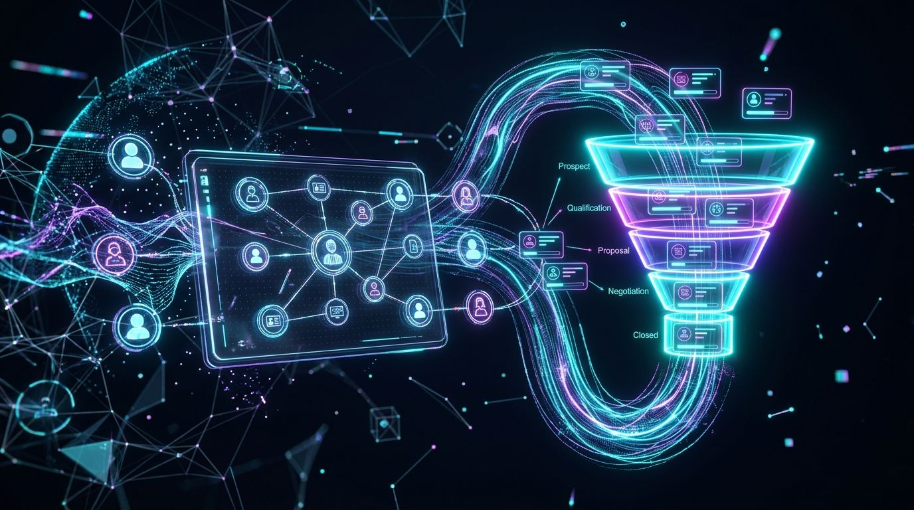

Every tech term. Explained visually.
Instant executive command of tech, AI architectures, and modern data stacks — decoded in plain English without downtime.

Build Your 2026 Smart Stack
The shift from Legacy Tech Stack to Smart Stack is complete. Legacy SaaS was about human data entry (50 menus and manual forms). The Smart Stack replaces grunt work with instant intention-to-outcome execution, radically refining the customer experience (CX) and your brand’s competitive moat.
The evolving brand frontier: hyper-personalized, instant, zero-friction customer intimacy.
Autonomous orchestration that maps intent to outcome with zero human data entry.
25x multi-threaded RAM memory engines and 330+ global edge cache nodes.
Permanent contextual memory, tensor embeddings, and relational knowledge graphs.
Every word you learn is added here permanently. Nodes connect through real stack relationships — click any node to open its full visual explainer.
Interactive Hover State Live Lab
Move your mouse over any highlighted word below. Click any term to instantly pin and load its full visual flowchart.
80‑Bot Swarm Real‑Time Telemetry
Autonomous agents discovering, disambiguating, and visual-flowcharting terms simultaneously.